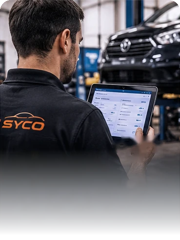
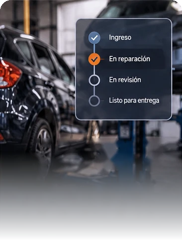

Órdenes de servicio
Crea, organiza y administra cada reparación desde su ingreso hasta su entrega.
Software de gestión para talleres

Gestiona · Organiza · Crece
Gestiona tus órdenes de servicio, controla tus procesos y mejora la experiencia de tus clientes, todo en un solo lugar.

Todo lo que necesitas
Simplifica tu día a día con herramientas poderosas y fáciles de usar.

Crea, organiza y administra cada reparación desde su ingreso hasta su entrega.

Consulta el estado de cada vehículo y mantén el control de sus avances en todo momento.
Documenta golpes, rayones y desperfectos mediante fotografías y observaciones detalladas.
Obtén información clave sobre tus operaciones para tomar decisiones más inteligentes.
Asigna órdenes a tus técnicos y consulta en qué estatus va cada trabajo, todo desde un solo lugar.
Consulta los registros de cada vehículo y conserva un historial organizado de sus servicios.
Mantén organizadas las actividades de cada reparación y facilita el seguimiento de los trabajos pendientes.
Ten órdenes, fotografías y datos de tus vehículos en un solo lugar, sin depender de registros dispersos.

Más control, mejores resultados
Ahorra tiempo, reduce errores y ofrece un servicio más profesional a tus clientes.
Elige el plan que mejor se adapte a las necesidades de tu taller.

Instalación gratis. Usuario adicional $99 / mes · Sucursal adicional $399 / mes. Ver todos los detalles
Solicita una demo gratuita y descubre todo lo que SYCO puede hacer por ti.